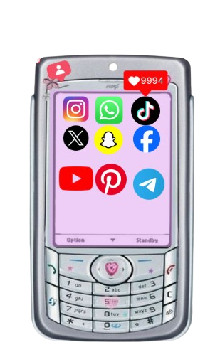
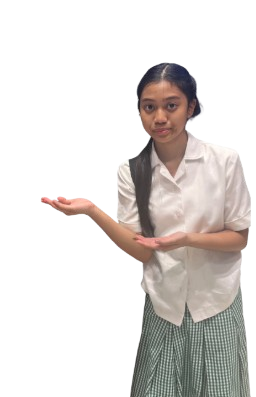

Secara umum, pengertian media sosial adalah sebuah media berbasis online di mana para penggunanya dapat dengan mudah berpartisipasi, berbagi, dan menciptakan isi meliputi blog, jejaring sosial, wiki, forum, dan dunia virtual. Menurut Chris Brogan, media sosial adalah seperangkat alat komunikasi dan kolaborasi yang memungkinkan terjadinya berbagai jenis interaksi yang sebelumnya tidak tersedia bagi orang awam. Media sosial memanfaatkan teknologi berbasis web dan seluler untuk mengubah komunikasi menjadi dialog yang interaktif antara sesama pengguna di seluruh dunia.
Sementara itu, pakar komunikasi Andreas Kaplan dan Michael Haenlein mendefinisikan media sosial sebagai sebuah kelompok aplikasi berbasis internet yang dibangun di atas dasar ideologi dan teknologi Web 2.0, serta memungkinkan penciptaan dan pertukaran konten buatan pengguna (user-generated content). Teknologi ini memungkinkan manusia untuk saling berinteraksi tanpa dibatasi oleh ruang dan waktu. Karakteristik utama dari media sosial adalah keterbukaan, adanya partisipasi aktif, percakapan dua arah, keterhubungan komunitas, serta kemudahan dalam menyebarkan informasi secara cepat dan masif kepada khalayak luas.
Dalam perkembangannya, media sosial telah mengubah lanskap komunikasi global dari yang semula bersifat satu arah (seperti televisi dan surat kabar) menjadi komunikasi multiarah. Setiap individu kini tidak hanya bertindak sebagai konsumen atau penerima informasi, melainkan juga berperan aktif sebagai produsen pesan. Kemudahan dalam mempublikasikan pemikiran, foto, maupun video secara instan menjadikan media sosial sebagai platform yang sangat ampuh dalam memengaruhi opini publik, membangun kesadaran sosial, hingga menggerakkan aksi sosial di tengah kehidupan bermasyarakat.
Kendati memberikan banyak kemudahan, pemanfaatan media sosial yang tidak didasari oleh etika dan literasi digital yang baik dapat menimbulkan berbagai dampak negatif. Maraknya penyebaran berita bohong (hoaks), pelanggaran privasi data pribadi, ujaran kebencian, hingga perundungan siber (cyberbullying) merupakan beberapa ancaman nyata di dunia maya. Oleh karena itu, kemampuan kritis dalam menyaring informasi, menjaga kesantunan berkomunikasi, serta melindungi identitas pribadi menjadi kunci utama agar setiap pengguna dapat menggunakan media sosial secara aman dan bermanfaat.
Dengan menerapkan sikap bijak dan bertanggung jawab dalam memanfaatkan media sosial, kita tidak hanya dapat menghindari risiko kejahatan siber dan konflik sosial, melainkan juga mampu mengoptimalkan teknologi ini sebagai sarana belajar, mengekspresikan kreativitas, membangun jaringan profesional, serta menyebarkan nilai-nilai positif bagi lingkungan sekitar. Penggunaan media sosial yang seimbang juga membantu menjaga kesehatan mental dan kualitas hubungan sosial di dunia nyata.

